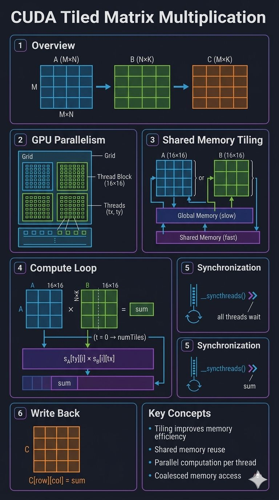

CUDA matrix multiplication: optimizing with shared memory and tiling
Matrix multiplication seems simple, but it's one of the hardest things to optimize. The difference between a "slow" and a "fast" kernel isn't the number of threads — it's how those threads access memory. One optimization method is tiling.
Tiling means loading small chunks of the matrix into shared memory (on-chip) and reusing them multiple times, instead of the naive approach of reading from global memory for every single operation.
Naive approach is inefficient
Each thread repeatedly fetches data from global memory, leading to redundant data loads and huge latency. The GPU ends up waiting for data instead of calculating.
Tiling reduces global memory access
Divide matrices into small tiles (sub-matrices). Each thread block focuses on one tile at a time — load once, reuse many times.
Shared memory enables data reuse
Each block collaboratively loads a tile into shared memory (on-chip). Once the data is in shared memory, it's reused dozens of times at extremely high efficiency.
Key insight
Tiling transforms memory-bound problems into compute-efficient ones. True CUDA performance doesn't just come from parallelism — it comes from data locality and minimizing global memory traffic.
Source code: github.com
